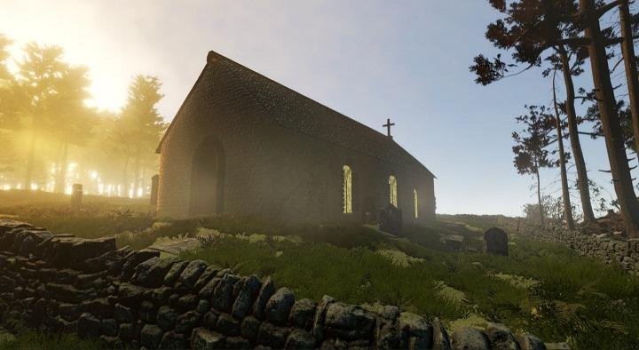
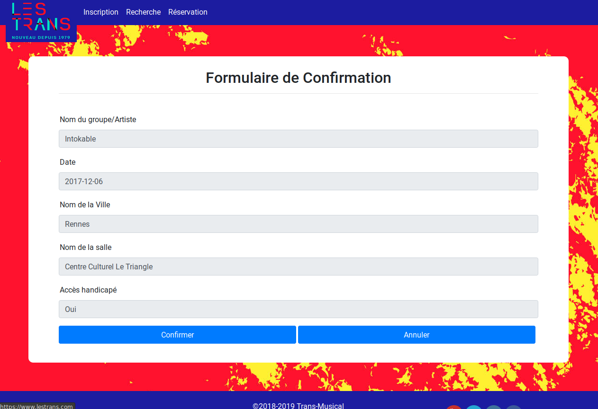
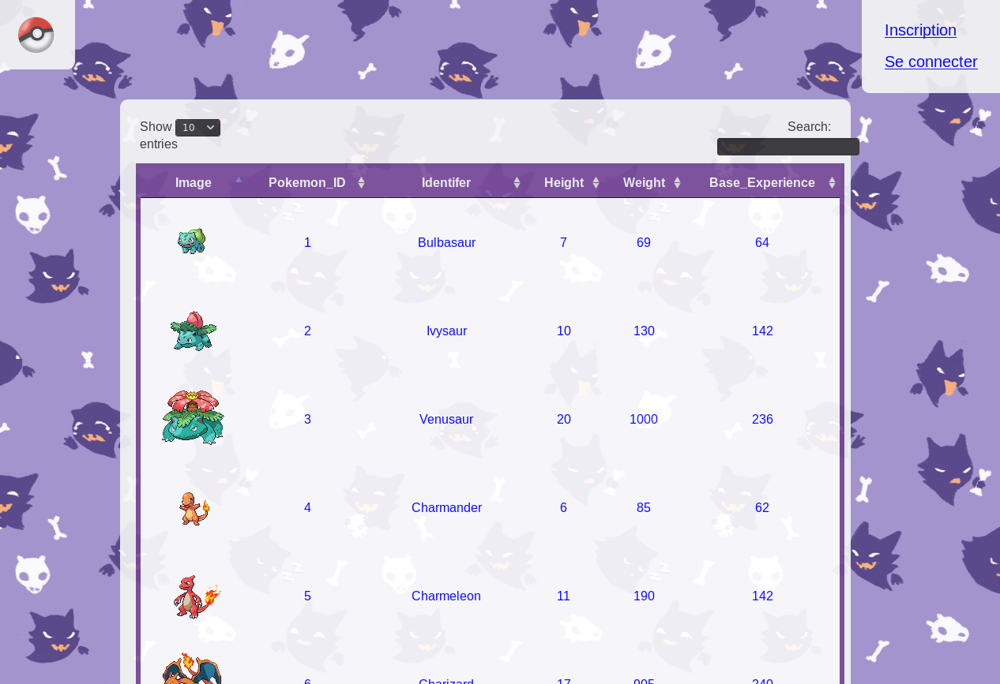
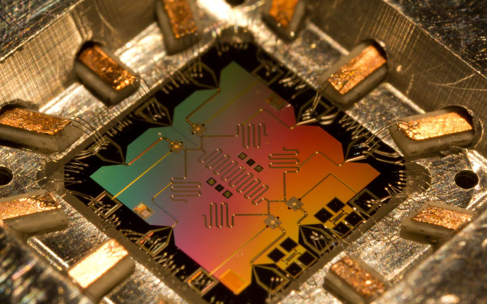
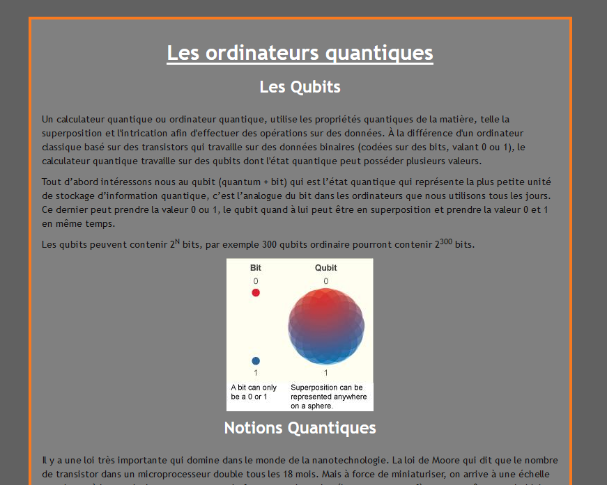

Musée 3D en réalité virtuelle (Spirits of St.Catherine’s)
Spirits of St.Catherine’s est un projet Unity 3D et C sharp Il s’agit de la reconstitution de l’église de St.Catherine en Irlande du Nord, dans laquelle, grâce à la technologie de la réalité virtuelle, nous pouvons nous déplacer dans l’église afin de pouvoir la visiter, le bâtiment étant très endommagé dans la réalité. Cela contribue à la sauvegarde du patrimoine culturel de l'Irlande du Nord.

Image du jeu - Église vue de dehors

Projet Unity jeu vidéo
Ce jeu est une réplique du jeu vidéo "Super Hexagon". Le jeu est disponible en
version Desktop, Web et Android.
Utilisation du langage de programmation C# ainsi que
de du moteur de jeu vidéo Unity

Réservations des salles pour les Trans Musicales
Projet PHP, HTML et CSS3 pour réserver des salles des Trans Musicales. Ce site web permet à tous les artistes participants au festival les Trans Musicales de réserver leurs salle de concert pour chaque jours du festival.

Aperçu accueil Site Web

Aperçu effectuer une recherche

Aperçu récapitulatif de réservation

Aperçu recherche effectuée

Aperçu réservations du groupe Intokable
Pokédex avec plus de 800 pokémons
Projet PHP, HTML et CSS3 pour réaliser un pokédex personnel pour chaque membre du site, les internautes peuvent créer un compte et s'y connecter; ajouter, supprimer des pokémons à leurs pokédex; parcourir le pokédex et bien d'autres fonctionnalités.

Aperçu accueil Site Web

Aperçu pokédex personnel Site Web
HTML sur la réalité augmentée
Projet HTML5 CSS3 avec l'intégration du Framework
Bootstrap afin d'avoir un rendu responsive pour
Smartphone ou Tablette
Voici le lien du site : Témango

Aperçu Site Web
Projet Java de distribution de courrier
Le but de ce projet est donc de proposer une application qui permet d'afficher la
route à suivre pour un facteur. La poste a une liste de courriers à distribuer.
Certaines rues piétonnes obligent les facteurs à faire leur tournée à pied.
Certaines rues (non piétonnes) sont à sens unique.
L'application doit afficher les adresses et nombre de lettres/colis par
lesquelles le facteur doit passer.
Bien sûr l'algorithme pour trouver les parcours des facteurs doit être
choisi de façon à permettre une dépense minimale en temps, carburant et avec le
moins possible de facteurs.
Utilisation du langage de programmation Java
ainsi que de JavaFX pour la gestion des interfaces
graphiques

Bêtes à Cornes X Facteur

Maquette X Facteur
Web Documentaire réalisé grâce à l'interview de l'aéroclub de Lannion, afin de présenter les différentes phases et trajectoires de vol


{kind=link}
{kind=link}
{kind=link}
{kind=link}
Site Web sur les ordinateurs quantiques et leur incroyable puissance de calcul
Projet HTML5 CSS3 avec l'intégration du Framework
Bootstrap afin d'avoir un rendu responsive pour
Smartphone ou Tablette
{kind=link}

Prototype d'ordinateur quantique
{kind=link}

Site web : ordinateur quantique
Application Android codée sous processing, Jeu de réflexion où le joueur doit transformer toutes les cases rouge en case bleue pour finir le niveau